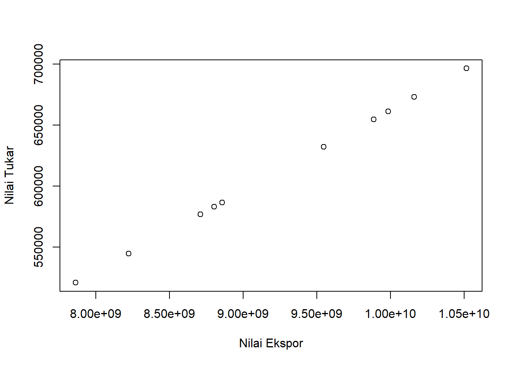
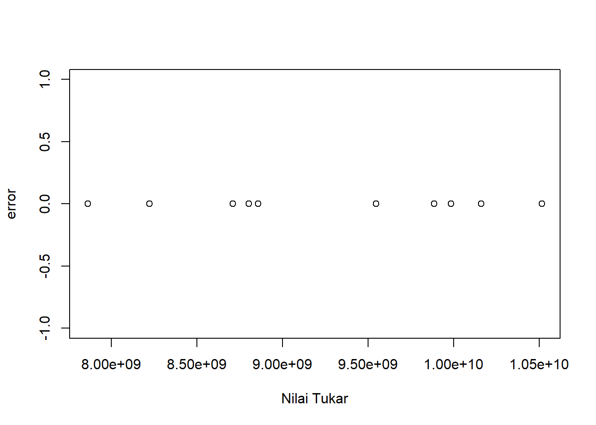

library(tidyverse)
library(readxl)
library(WDI) Analisis Pengaruh Ekspor Kopi ke Negara Amerika Serikat terhadap Nilai Tukar Rupiah Pada Tahun 2012-2021
Metodologi Penelitian

1 Pendahuluan
1.1 Latar belakang
Kopi merupakan tanaman yang tumbuh di daerah tropis pada ketinggian 700-1600 meter di atas permukaan laut. Tanaman kopi ini dapat tumbuh hingga setinggi 9 meter, namun kopi ini membutuhkan pemangkasan yang singkat untuk menghemat energi dan mudah dipanen. Awalnya, kopi diperkenalkan oleh Belanda dengan menanam pohon kopi di wilayah mereka di Batavia, namun pada abad ke-17 dan ke-18 produksi kopi berkembang pesat hingga ke daerah Bogor dan Sukabumi di Jawa Barat. Indonesia terbukti memiliki iklim yang hampir ideal untuk produksi kopi dan perkebunan segera dibangun di bagian lain di Jawa, Sumatera dan Sulawesi.
Sebagai sektor pokok perkebunan dalam negeri, industri kopi memegang peranan penting dalam pertumbuhan ekonomi negara. Industri kopi telah berperan sebagai sumber pendapatan petani kopi, sumber devisa negara, penghasil bahan baku industri, dan sumber lapangan kerja melalui kegiatan pengolahan, pemasaran, perdagangan impor dan ekspor. Kopi Indonesia adalah salah satu kopi paling populer di dunia. Ekspor kopi Indonesia diminati banyak negara di dunia. Ekspor kopi Indonesia akan tumbuh pada tahun 2021, seperti yang ditunjukkan oleh laporan BPS. Amerika Serikat akan menjadi tujuan utama ekspor kopi Indonesia pada 2021. Ekspor kopi Indonesia ke negeri Paman Sam tercatat naik 57,69 ribu ton. Sedangkan nilai ekspornya sebesar 194,76 juta dollar.
Volume dan nilai ekspor kopi Indonesia mengalami penurunan selama satu dekade terakhir. Volume dan nilai ekspor kopi tertinggi terjadi pada tahun 2013 dan terendah pada tahun 2018. Saat ini perkebunan kopi di Indonesia menempati total luas sekitar 1,24 juta hektar, dimana 933 hektar merupakan perkebunan Robusta dan 307 hektar merupakan perkebunan Arabika. Menurut Badan Pusat Statistik (BPS), total produksi kopi Indonesia pada 2019 sebanyak 742.000 ton. Perkebunan kopi kecil menyumbang 98,6% dari total produksi (731.600 ton), perkebunan besar milik negara (5.600 ton) menyumbang 0,8%, dan perkebunan besar swasta (4.400 ton) menyumbang 0,6%.
1.2 Ruang lingkup
Penelitian ini hanya membahas terkait pengaruh ekspor kopi ke negara Amerika Serikat terhadap nilai tukar rupiah pada tahun 2012-2021. Batasan permasalahan ini digunakan untuk menghindari penyimpangan atau pelebaran dari pokok masalah.
1.3 Rumusan masalah
Apakah ekspor kopi ke negara Amerika Serikat dapat berpengaruh terhadap nilai tukar rupiah?
1.4 Tujuan dan manfaat penelitian
Tujuan dari penelitian ini untuk mengetahui bagaimana pengaruh ekspor kopi ke negara Amerika Serikat terhadap nilai tukar rupiah. Manfaat yang diharapkan dari penelitian ini adalah untuk mengetahui pengaruh ekspor kopi ke negara Amerika Serikat terhadap nilai tukar rupiah guna mendapatkan gambaran dan menetapkan kebijakan terhadap ekspor kopi ke negara Amerika Serikat.
1.5 Package
packages yang digunakan antara lain sebagai berikut:
2 Studi pustaka
Iftitah Nurul Laily [2022:4], perdagangan internasional adalah kegiatan yang terkait dengan transaksi barang dan/atau jasa yang terjadi antar negara tujuan untuk memperoleh keuntungan.
Andri Feriyanto [2015], ekspor adalah perdagangan dengan cara mengeluarkan barang dari dalam ke luar wilayah pabean Indonesia dengan memenuhi ketentuan yang berlaku.
Menurut data Badan Pusat Statistik [2022], pada 2021 Indonesia mengimpor kopi seberat 384,51 ribu ton ke berbagai negara dengan nilai total mencapai USD 849,37 juta. Amerika Serikat menjadi tujuan utama ekspor kopi nasional dengan volume mencapai 57,69 ribu ton atau 15% dari total ekspor lain.
3 Metode penelitian
3.1 Data
| TAHUN | NILAI EKSPOR | NILAI TUKAR |
|---|---|---|
| 2012 | USD 696516 | Rp 10514535884 |
| 2013 | USD 661381 | Rp 9984141437,9 |
| 2014 | USD 583085 | Rp 8802192851,5 |
| 2015 | USD 654813 | Rp 9884991566,7 |
| 2016 | USD 673092 | Rp 10160929522 |
| 2017 | USD 632376 | Rp 9546284858,4 |
| 2018 | USD 520835 | Rp 7862473076,5 |
| 2019 | USD 586662 | Rp 8856190885,8 |
| 2020 | USD 544737 | Rp 8223295278,3 |
| 2021 | USD 576940 | Rp 8709428546 |
penelitian ini menggunakan data Badan Pusat Statistik (BPS).
library(readxl)
bul<-read_excel("latihan.xlsx")
plot(bul$Y,bul$X,xlab="Nilai Ekspor",ylab="Nilai Tukar")
library(readxl)
bul<-read_excel("latihan.xlsx")
reg<-lm(Y~X,data=bul)
bul$u<-resid(reg)
plot(bul$Y,bul$u,ylab="error",xlab="Nilai Tukar")
3.2 Metode analisis
Teknik analisis yang digunakan pada penelitian ini adalah teknik kuantitatif dan pengolahan deskriptif. Teknik analisis kuantitatif adalah analisis yang dilakukan dengan menghitung angka-angka yang menggunakan indeks nilai tukar rupiah terhadap nilai ekspor kopi ke negara Amerika Serikat. Metode yang dipilih adalah regresi univariat atau Ordinary Least Square (OLS) dengan 1 variabel independen. Penelitian ini bermaksud mencari hubungan antara hwy dan cty. Spesifikasi yang dilakukan adalah:
\[ y_{t}=\beta_0 + \beta_1 x_t+\mu_t \] di mana \(y_t\) adalah nilai tukar dan \(x_t\) adalah nilai ekspor
4 Pembahasan
4.1 Pembahasan masalah
| Variable | Coefisien | Std.Error | t-value | Prob |
|---|---|---|---|---|
| intercept | -9.840e-05 | 5.440E-05 | -1.809e+00 | 0.108 |
| Y | 6.624e-05 | 5.854e-15 | 1.132e+10 | <2e-16*** |
| R-Squared | 1 |
|---|---|
| Adjusted R-Squared | 1 |
| F-statistic | 1.28e+20 |
| Prob(F-statistic) | <2.2e-16 |
Pengaruh Nilai Tukar Rupiah Terhadap Ekspor Kopi ke Amerika Serikat
Ekspor kopi mempengaruhi nilai tukar. Yang ditunjukkan pada probabilitas X (nilai ekspor) yang signifikan. Nilai ekspor seringkali menjadi faktor yang dapat meningkatkan atau menurunkan nilai tukar suatu negara. Nilai koefisien ekspor sebesar -9.840e-05 yang berarti peningkatan perubahan nilai ekspor dapat mempengaruhi nilai tukar rupiah terhadap USD. Hasil ini berpengaruh negatif terhadap nilai tukar pendapatan ekspor.
4.2 Analisis masalah
Hasil regresinya adalah
library(readxl)
bul<-read_excel("latihan.xlsx")
reg<-lm(X~Y,data=bul)
summary(reg)
Call:
lm(formula = X ~ Y, data = bul)
Residuals:
Min 1Q Median 3Q Max
-1.633e-05 -9.320e-06 -2.219e-06 4.026e-06 3.463e-05
Coefficients:
Estimate Std. Error t value Pr(>|t|)
(Intercept) -9.840e-05 5.440e-05 -1.809e+00 0.108
Y 6.624e-05 5.854e-15 1.132e+10 <2e-16 ***
---
Signif. codes: 0 '***' 0.001 '**' 0.01 '*' 0.05 '.' 0.1 ' ' 1
Residual standard error: 1.558e-05 on 8 degrees of freedom
Multiple R-squared: 1, Adjusted R-squared: 1
F-statistic: 1.28e+20 on 1 and 8 DF, p-value: < 2.2e-165 Kesimpulan
Berdasarkan dari data hasil analisis kuantitatif, diketahui bahwa ekspor kopi ke Amerika Serikat berpengaruh negatif terhadap nilai tukar rupiah dan kopi merupakan salah satu komoditas perkebunan utama dengan volume ekspor terbesar Indonesia. Oleh karena itu, jika ekspor kopi berpengaruh negatif terhadap nilai tukar rupiah maka akan mempengaruhi nilai tukar rupiah terhadap USD.
6 Referensi
Jalin Kerja Sama Ekspor bagi Petani Kopi, Pemerintah Maksimalkan Potensi Industri Kopi Nasional—Kementerian Koordinator Bidang Perekonomian Republik Indonesia. (n.d.). Retrieved January 19, 2023, from https://www.ekon.go.id/publikasi/detail/4635/jalin-kerja-sama-ekspor-bagi-petani-kopi-pemerintah-maksimalkan-potensi-industri-kopi-nasional
Konsulat Jenderal Republik Indonesia, Di Chicago,, Amerika Serikat. (n.d.). Retrieved January 19, 2023, from https://kemlu.go.id/chicago/id/read/kopi-indonesia/4484/etc-menu
Kinerja Ekspor Kopi Indonesia Meningkat pada 2021 | Databoks. (n.d.). Retrieved January 19, 2023, from https://databoks.katadata.co.id/datapublish/2022/02/26/kinerja-ekspor-kopi-indonesia-meningkat-pada-2021 Badan Pusat Statistik. (n.d.). Retrieved January 19, 2023, from https://www.bps.go.id/statictable/2014/09/08/1014/ekspor-kopi-menurut-negara-tujuan-utama-2000-2021.html